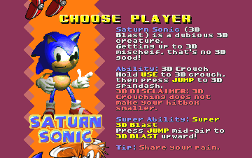

Saturn Sonic (3D Blast Sonic) - Sonic Robo Blast 2: Character Mod

Saturn Sonic (or Sonic from Sonic 3D Blast on the Sega Saturn) is another Sonic character for SRB2.
Saturn Sonic is more of a challenge to play as, he runs slower than Sonic, and is more slippery.
Abilities
Crouch (Pressing jump allows you to spindash)
And if you're willing to get all of the chaos emeralds...
Super Abilities
Super 3D Blast
Pressing jump after leaving the ground (or jumping) will allow Sonic to 3D Blast upward!

Credits
ChrisFurry - Creator of the original mod, imported sprites and did new lua
MACHTURNE - Lua scripter for the original mod
BCat - Ripped Sonic 3D Blast Saturn sprites onto the Spriters Resource
superandrews - Ripped titlescreen sprite out of the bg, same with down-syndrome Sonic
Playtesters
superandrews
rosy_eclairs
MadJinjo
NeigePastel
MarkTheMaster91
Saturn's Rings